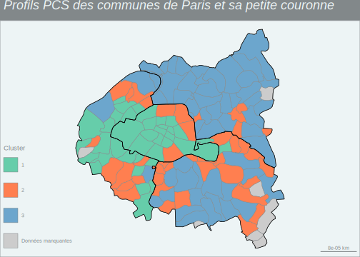

Section 13 Clustering : application sur le RP 2019
13.1 Choix des variables et préparation du tableau final
A partir de la base du RP2019, l’objectif de notre analyse est de décrire des groupes de communes qui se ressemblent ou sont relativement homogènes, c’est-à-dire qui ont des caractéristiques proches. Mais, bien sûr, les méthodes de clustering peuvent être appliquées à toutes sortes de problématiques et de données.
Pour cela, on doit avoir un tableau avec n individus ou observations (lignes) et p variables (colonnes), la mesure des variables peut être des effectifs, mais aussi des proportions. L’idée étant de regrouper nos communes en classes homogènes (=clusters) en un nombre plus restreint, nos observations sont donc constituées ici par les communes. Il faut ensuite choisir sur quelles caractéristiques on va les regrouper et chercher une certaine homogénéité. Cela peut être à partir de différentes choses selon notre base de données : caractéristiques socio-professionnelles de la personne de référence du ménage, caractéristiques des logements, etc.
13.1.1 Variable socio-professionnelle caractérisant la personne de référence du ménage
On va dans cet exemple (communes de Paris et sa petite couronne) s’intéresser aux caractéristiques socio-professionnelles de la population de 15 ans ou plus : on aura en lignes nos n communes des 4 départements et en colonnes nos p variables d’entrées, soient par exemple le nombre d’habitants, le nombre d’individus qui sont actuellement chômeurs, le nombre de personnes en emploi, le nombre de cadres, etc.
On va réaliser ic un exemple très simple en ne prenant qu’une variable reconstruite à partir de celle de la catégorie socio-professionnnelle (CS1) qui a actuellement 8 modalités et de celle du type d’activité (TACT), cela permettant de distinguer les actifs en emploi des chômeurs. Si l’on prend plus de variables, il faut faire attention à ce que certaines modalités ne se recoupent pas entre elles, ou quand l’information est trop proche - par exemple la condition d’emploi et le type d’activité. Pour cela, il faut étudier les corrélations entre les variables finalement obtenues. Mais si le nombre de variables prises en compte est importante, il peut être également plus pertinent de procéder avant la méthode de clustering à une méthode d’analyse factorielle.
Regardons d’abord pour cette variable - CS1 - si un regroupement et un recodage des modalités est nécessaire.
# Chargement des librairies
library(tidyverse)
library(janitor)
library(gt)
meta %>%
select(COD_VAR, COD_MOD, LIB_MOD) %>%
filter(COD_VAR=="CS1")# A tibble: 8 × 3
COD_VAR COD_MOD LIB_MOD
<fct> <fct> <fct>
1 CS1 1 Agriculteurs exploitants
2 CS1 2 Artisans, commerçants et chefs d'entreprise
3 CS1 3 Cadres et professions intellectuelles supérieures
4 CS1 4 Professions Intermédiaires
5 CS1 5 Employés
6 CS1 6 Ouvriers
7 CS1 7 Retraités
8 CS1 8 Autres personnes sans activité professionnelle # Fonction "tableau" créée dans la section 6
RP_final %>% filter(!AGER20 %in% c("2","5", "10","14")) %>%
tableau(var_quali = CS1, nom_var_quali = "PCS")# A tibble: 9 × 3
PCS Effectif Pourcentage
<fct> <dbl> <dbl>
1 1 891. 0
2 2 187817. 3.4
3 3 1202479. 21.5
4 4 838617. 15
5 5 872375. 15.6
6 6 416075. 7.4
7 7 1020480. 18.2
8 8 1055867. 18.9
9 Total 5594601. 100 Il faut donc supprimer la modalité “1” qui correspond aux agriculteurs car trop peu représentés sur ce champ, mais pour le reste on peut laisser comme cela.
13.1.2 Création du tableau de contingence
Pour créer le tableau de contigence donnant le nombre d’individus pour chacune des modalités de cette variable et pour chaque commune, on va créer une fonction qu’on va appeler tab_cont_n, pour avoir en ligne les communes et en colonne chaque modalité de la variable en question :
tab_cont_n <- function(data, ..., nom_var, var, prefix_var)
{
tab_n <- data %>%
group_by(...) %>%
summarise({{ nom_var }} := round(sum(IPONDI))) %>%
pivot_wider(names_from = {{ var }}, values_from = {{ nom_var }},
values_fill = 0, names_prefix = prefix_var)
return(tab_n)
}On crée maintenant notre tableau de contingence, en créant comme déjà mentionné une variable croisant l’information sur la catégorie socio-professionnelle et celle sur le statut d’activité regroupé en emploi, chômage, retraités ou autres inactifs.
# On enlève les agriculteurs, , la commune sans dénomination et les moins de 15 ans
cat_soc <- RP_final %>%
filter(CS1!="1" & COM!="ZZZZZ" &!AGER20 %in% c("2","5", "10","14")) %>%
mutate(CS_empcho = as.factor(case_when(CS1 == "2" & TACT=="11" ~ "Arti_com",
CS1 == "3" & TACT=="11" ~ "Cadres",
CS1 == "4" & TACT=="11" ~ "PI",
CS1 == "5" & TACT=="11" ~ "Employés",
CS1 == "6" & TACT=="11" ~ "Ouvriers",
CS1 %in% c("2","3","4","5","6","8") &
TACT=="12" ~ "Chômeurs",
CS1 == "7" & TACT=="21" ~ "Retraités",
TRUE ~ "Autres inactifs"))) %>%
tab_cont_n(COM, CS_empcho, nom_var=cat_soc, var=CS_empcho, prefix_var="nb_")
cat_soc# A tibble: 136 × 9
COM nb_Arti_com `nb_Autres inactifs` nb_Cadres nb_Chômeurs nb_Employés
<chr> <dbl> <dbl> <dbl> <dbl> <dbl>
1 75101 828 2249 4294 935 1268
2 75102 1086 2320 7056 1375 1761
3 75103 1619 4287 10160 2085 2617
4 75104 1247 4100 7793 1863 2344
5 75105 1869 11010 15853 2611 3494
6 75106 1788 8296 10170 1842 2348
7 75107 2462 8257 12641 2165 3603
8 75108 1801 5559 9702 1565 2846
9 75109 2736 7069 19617 3478 4083
10 75110 2792 11091 24147 6343 6956
# ℹ 126 more rows
# ℹ 3 more variables: nb_Ouvriers <dbl>, nb_PI <dbl>, nb_Retraités <dbl>On a donc 136 lignes correspondant à 136 communes de nos 4 départements, et 9 variables.
On va rajouter le nom des communes comme identifiant dans le tableau, c’est-à-dire dans le nom de la 1ère colonne, avec la fonction column_to_rownames(). Cela peut être conseillé pour la procédure de clustering, afin que chaque commune soit bien identifié par son nom (label) ; on verra toutefois dans notre exemple que cela devient illisible si on a trop de communes/individus.
# A tibble: 136 × 8
nb_Arti_com `nb_Autres inactifs` nb_Cadres nb_Chômeurs nb_Employés
<dbl> <dbl> <dbl> <dbl> <dbl>
1 828 2249 4294 935 1268
2 1086 2320 7056 1375 1761
3 1619 4287 10160 2085 2617
4 1247 4100 7793 1863 2344
5 1869 11010 15853 2611 3494
6 1788 8296 10170 1842 2348
7 2462 8257 12641 2165 3603
8 1801 5559 9702 1565 2846
9 2736 7069 19617 3478 4083
10 2792 11091 24147 6343 6956
# ℹ 126 more rows
# ℹ 3 more variables: nb_Ouvriers <dbl>, nb_PI <dbl>, nb_Retraités <dbl>13.2 La méthode de la CAH appliquée à nos données
13.2.1 Constitution des classes
Comme nos communes ont plus d’habitants que d’autres, pour éviter un effet taille de nos communes, on va utiliser la distance du khi-2. Pour cela, deux façons de faire avec deux packages différents : soit le package vegan() et la fonction decostand() avec l’argument method="chi.square" qui crée un tableau sur lequel on applique ensuite la méthode de distance euclidienne et dans ce cas on aura des distinces similaires à celles du khi-2 (voir ici) ; soit le package ade4 et les fonctions combinées dist.dudi(dudi.coa()) avec l’argument amongrow=TRUE (pour préciser que les distances doivent être calculées entre lignes, ici les communes).
# Etape 1 : on transforme la table sur laquelle on obtiendra des distances du khi-deux
# install.packages("vegan")
library(vegan)
cat_soc_chi2 <- decostand(cat_soc, method = "chi.square")
# Etape 2 : on crée la matrice de distance, en utilisant la distance euclidienne
# standard sur la table transformée, ce qui nous donnera des distances similaires
# à celle du khi-2
dist_mat <- dist(cat_soc_chi2, method = 'euclidean')
# on peut vérifier qu'on obtient la même matrice avec la seconde méthode évoquée
#install.packages("ade4")
library(ade4)
dist_mat_bis <- dist.dudi(dudi.coa(cat_soc, scannf=FALSE, nf=7), amongrow=TRUE)
# si on souhaite voir et comparer les matrices de distances,
# on doit les transformer en matrice avec la fonction 'as.matrix' :
cat_soc_chi2_m <- as.matrix(dist_mat)
cat_soc_chi2_bis_m <- as.matrix(dist_mat_bis)
# elles sont bien similaires
#Etape 3 : on choisit la méthode d'agrégation, ici la plus standard, le critère de Ward
classif_socioprof <- hclust(dist_mat, method = "ward.D2")
#Etape 4 : on visualise l'arbre de classification ou dendogramme
plot(classif_socioprof, xlab="Commune", main="Dendogramme")
On remarque ici que comme nous avons mis en label le nom des communes, on peut tout de suite savoir quelles communes sont proches et vont former des classes. Toutefois, avec 136 communes ce n’est absolument pas lisible !! Donc on peut aussi les enlever avec l’option label=FALSE dans la fonction plot().
Il existe aussi une fonction via ggplot2 pour dessiner l’abre, mais il faut installer avant le package ggdendro.
Il faut maintenant prendre une décision : où coupe-t-on l’arbre pour obtenir une partition de la population (ici nos communes), autrement dit combien de classes choisissons-nous ?
On peut d’abord s’appuyer sur la forme du dendogramme : plus une “branche” est haute et plus on perd en distance ou ici (critère de Ward) en inertie interclasse3, il faudra donc couper l’arbre au niveau de cette branche. Il faut également prendre en compte ce qui peut être le mieux pour l’analyse : si on aboutit à une classification en 2 classes, cela risque d’être peu intéressant à analyser, mais si on a une classification en 5 classes ou plus, cela va devenir compliqué à interpréter…
Ici, dans les deux cas, il semble que choisir 2 classes soit très pertinent, mais on voit qu’on pourrait aussi choisir 4 classes (ou même 3 éventuellement) si l’on veut rentrer un peu plus dans le détail de l’analyse.
On peut également s’aider de représentations des sauts d’inertie du dendrogramme selon le nombre de classes qui peut être retenu, avec la fonction plot et en récupérant l’information sur l’inertie (height).
# On stocke l'attribut `$height` dans l'objet `inertie` en triant les valeurs par
# ordre décroissant.
inertie_socioprof <- sort(classif_socioprof$height, decreasing=TRUE)
plot(inertie_socioprof, type="s", xlab="Nombre de classes", ylab="Inertie",
xlim = c(1,15), xaxp = c(1,15,14))
points(c(2, 3, 4), inertie_socioprof[c(2,3,4)],
col = c("blue3", "brown3", "chartreuse3"), cex = 2, lwd = 2)Ou encore créer d’autres indicateurs plus rigoureux, comme la part de la perte d’inertie interclasse dans l’inertie totale (on parle aussi de “semi-partial R-squared”).
#on crée un indicateur de part en %
partinertie_socioprof <- inertie_socioprof/sum(inertie_socioprof)*100
plot(partinertie_socioprof, type="b", xlab="Nombre de classes",
ylab="Part dans l'inertie totale en %", xlim = c(1,15), xaxp = c(1,15,14))On voit que les graphiques sont assez proches, qu’ils soient construits à partir de la mesure en valeur absolue ou en valeur relative. Il y a un saut important après 2 classes (hauteur sur le 1er graphique, ou importance de la pente sur le 2ème graphique) par exemple.
Enfin, à savoir que des fonctions existent donnant une indication de la “meilleure” partition à choisir, mais attention le choix se fait aussi (et peut-être surtout) en fonction de l’analyse que l’on veut mener et de l’interprétation que l’on pourra faire des classes obtenues ! Pour l’exemple, je vous mets ci-dessous le code de Julien Larmarange pour tester ce type de fonctions ; la “meilleure” partition selon la perte d’inertie relative est représentée par un point noir et la seconde par un point gris. On voit qu’ici il est bien indiqué d’abord 2 classes, puis comme seconde “meilleure” partition 3 classes, ce qui correspond plutôt bien aux graphiques précédents.
library(devtools)
source(url("https://raw.githubusercontent.com/larmarange/JLutils/master/R/clustering.R"))
#On a choisit un maximum de 15 classes ici...
best.cutree(classif_socioprof, min=2, max=15, graph = TRUE,
xlab = "Nombre de classes", ylab = "Inertie relative")[1] 2Finalement, au vu de la forme du dendogramme et des graphes sur l’inertie (et de la fonction d’aide à la décision précédente), on choisit de prendre 4 classes pour une analyse plus fine, mais on va stocker également les résultats pour 3 classes. On peut de nouveau visualiser le dendogramme en matérialisant les différents choix du nombre de classes.
par(mfrow = c(1, 1), mar=c(5, 9, 1, 1))
plot(classif_socioprof, xlab="Commune", main="Dendogramme", label=FALSE)
rect.hclust(classif_socioprof, k=3, border = 'blue3')
rect.hclust(classif_socioprof, k=4, border = 'brown3')On peut également utiliser la fonction color_branches() du package dendextend(), mais il faut appeler de nouveau ggplot2 après.
# On peut encore également utiliser la fonction `color_branches()` du package
# `dendextend()` mais il faut appeler de nouveau `ggplot2` après
library(dendextend)
library(ggplot2)
ggplot(color_branches(classif_socioprof, k = 4), labels = FALSE)
On choisit donc d’abord d’analyser notre clustering en 3 ou 4 classes : pour découper l’arbre et obtenir la partition souhaitée, on utilise la fonction cutree(), et on peut ensuite visualiser quelle commune est dans quelle classe et le nombre (et la part) de communes par classe.
On intègre ensuite la variable au tableau initial “cat_soc_chi2” qui contient les variables utilisées, mais on pourra ensuite fusionner la table avec notre table initiale “RP_final” pour mener des analyses plus approfondies des classes, y compris avec des variables non utilisées dans le clustering.
#Découpage en k classes
classe3_soprof <- cutree(classif_socioprof, k=3)
classe4_soprof <- cutree(classif_socioprof, k=4)
#Liste des groupes
#library(janitor)
tabyl(classe3_soprof) %>% adorn_pct_formatting() %>% gt()| classe3_soprof | n | percent |
|---|---|---|
| 1 | 39 | 28.7% |
| 2 | 41 | 30.1% |
| 3 | 56 | 41.2% |
| classe4_soprof | n | percent |
|---|---|---|
| 1 | 39 | 28.7% |
| 2 | 41 | 30.1% |
| 3 | 28 | 20.6% |
| 4 | 28 | 20.6% |
75101 75102 75103 75104 75105 75106 75107 75108 75109 75110 75111 75112 75114
1 1 1 1 1 1 1 1 1 1 1 1 1
75115 75116 75117 92002 92012 92014 92020 92022 92026 92035 92040 92044 92049
1 1 1 1 1 1 1 1 1 1 1 1 1
92051 92062 92063 92064 92071 92072 92073 92075 92076 92077 94052 94067 94080
1 1 1 1 1 1 1 1 1 1 1 1 1
75113 75118 75119 75120 92004 92009 92019 92023 92024 92025 92032 92033 92046
2 2 2 2 2 2 2 2 2 2 2 2 2
92048 92060 93033 93045 93049 93062 93077 94003 94015 94016 94018 94033 94037
2 2 2 2 2 2 2 2 2 2 2 2 2
94038 94042 94043 94046 94048 94055 94058 94059 94065 94068 94069 94071 94073
2 2 2 2 2 2 2 2 2 2 2 2 2
94075 94079 92007 92050 93006 93032 93046 93048 93050 93051 93055 93057 93061
2 2 3 3 3 3 3 3 3 3 3 3 3
93063 93064 93070 93073 93074 94002 94017 94019 94021 94022 94028 94034 94041
3 3 3 3 3 3 3 3 3 3 3 3 3
94044 94060 94076 94077 92036 92078 93001 93005 93007 93008 93010 93013 93014
3 3 3 3 4 4 4 4 4 4 4 4 4
93027 93029 93030 93031 93039 93047 93053 93059 93066 93071 93072 93078 93079
4 4 4 4 4 4 4 4 4 4 4 4 4
94004 94011 94054 94074 94078 94081
4 4 4 4 4 4 #Ajout des variables de classe dans la table initiale de clustering
clust_socioprof_3_cl <- cbind.data.frame(cat_soc_chi2, classe3_soprof=as.factor(classe3_soprof))
clust_socioprof_4_cl <- cbind.data.frame(cat_soc_chi2, classe4_soprof=as.factor(classe4_soprof))La 1ère classe comprend donc 39 communes soit 29% de l’ensemble des communes de Paris et sa petite couronne, la 2ème classe 41 communes ou 30%, et la 3ème classe rassemble 56 communes soit 41% lorsqu’elle est agrégée et sinon se divive en deux classes de même nombre (28 et 28) ou proportion dans la partition à 4 classes. La dernière sortie nous donne la place de chaque commune chacune des 4 classes, mais ce n’est pas super lisible ainsi.
13.2.2 Visualisation sur la carte des communes et départements
Enfin, on peut visualiser sur la carte des communes et départements les quatre classes construites et choisies.
library(geojsonsf)
library(sf)
library(mapsf)
# on charge le fonds de carte des communes
map_com <- geojson_sf("https://public.opendatasoft.com/api/explore/v2.1/catalog/datasets/geoflar-communes-2015/exports/geojson?lang=fr&refine=nom_reg%3A%22ILE-DE-FRANCE%22&timezone=Europe%2FBerlin")
#saveRDS(map_com,"data/map_com_idf.RDS")
map_com <- map_com %>% filter(code_dept %in% c("75", "92", "93", "94")) %>%
rename(COM=insee_com)
map_dept <- map_com %>% group_by(code_dept, nom_dept) %>%
summarise()
typo3 <- clust_socioprof_3_cl %>% rownames_to_column(var = "COM") %>%
select(COM, classe3_soprof)
map_com_typo <- map_com %>% select(COM, nom_com, geometry) %>%
left_join(typo3)
mf_theme("agolalight")
mf_map(map_com_typo, var="classe3_soprof", type="typo",
pal = c("aquamarine3", "coral", "skyblue3"),
leg_pos = "bottomleft", leg_title="Cluster",
col_na = "gray80", leg_no_data = "Données manquantes")
mf_map(map_dept, var="nom_dep", type = "base",
col = NA, col_na = "gray80",
border="black",lwd=1, add = TRUE)
# mf_label(map_dept, var="nom_dept",
# cex=0.6, col="black",
# overlap = FALSE)
mf_layout(title = "Profils PCS des communes de Paris et sa petite couronne",
frame = TRUE, credits=" ", arrow = F)
typo4 <- clust_socioprof_4_cl %>% rownames_to_column(var = "COM") %>%
select(COM, classe4_soprof)
map_com_typo <- map_com %>% select(COM, nom_com, geometry) %>%
left_join(typo4)
mf_theme("agolalight")
mf_map(map_com_typo, var="classe4_soprof", type="typo",
pal = c("aquamarine3", "coral", "skyblue3", "brown4"),
leg_pos = "bottomleft", leg_title="Cluster",
col_na = "gray80", leg_no_data = "Données manquantes")
mf_map(map_dept, var="nom_dep", type = "base",
col = NA, col_na = "gray80",
border="black",lwd=1, add = TRUE)
# mf_label(map_dept, var="nom_dept",
# cex=0.6, col="black",
# overlap = FALSE)
mf_layout(title = "Profils PCS des communes de Paris et sa petite couronne",
frame = TRUE, credits=" ", arrow = F)On voit avec la seconde carte que la partition en 4 classes permet de préciser le clustering en particulier pour les communes du département de Seine-St-Denis. On va retenir cette partition en 4 classes pour l’interprétation.
13.2.3 Interprétation
Il faut maintenant comprendre la partition obtenue et interpréter nos 4 classes en les décrivant principalement ici à partir des variables utilisées dans le clustering. On peut pour cela utiliser le package FactoMineR qui permet avec la fonction catdes de sortir des résultats sur, d’une part, les liens les plus significatifs entre les variables actives de la CAH et la variable globale de cluster/classes, et, d’autre part de manière plus précise, sur les liens les plus significatifs entre les variables et chacune des classes. De manière générale, le package FactoMineR est presque indispensable pour toute analyse factorielle de données et/ou clustering (voir ici).
Link between the cluster variable and the quantitative variables
================================================================
Eta2 P-value
nb_Cadres 0.9075190 5.051344e-68
nb_Ouvriers 0.8691562 4.369492e-58
nb_Employés 0.8304926 1.125821e-50
nb_Chômeurs 0.7194329 2.916476e-36
nb_Autres.inactifs 0.6262392 4.530630e-28
nb_PI 0.4836017 7.367933e-19
nb_Retraités 0.3360390 9.898185e-12
nb_Arti_com 0.2180956 3.920464e-07
Description of each cluster by quantitative variables
=====================================================
$`1`
v.test Mean in category Overall mean sd in category
nb_Cadres 9.230631 0.6634648 0.3984220 0.05880146
nb_Arti_com 5.077079 0.2140143 0.1772711 0.06795860
nb_PI -2.306082 0.3535017 0.3736918 0.05635525
nb_Autres.inactifs -4.054787 0.3745396 0.4253899 0.06096658
nb_Chômeurs -5.972422 0.2115313 0.2844051 0.03021788
nb_Ouvriers -8.016067 0.1146623 0.2744024 0.02567630
nb_Employés -8.936187 0.2633226 0.3842266 0.03755561
Overall sd p.value
nb_Cadres 0.21154267 2.690426e-20
nb_Arti_com 0.05331831 3.832822e-07
nb_PI 0.06450243 2.110606e-02
nb_Autres.inactifs 0.09239296 5.018006e-05
nb_Chômeurs 0.08989471 2.337566e-09
nb_Ouvriers 0.14681341 1.091849e-15
nb_Employés 0.09967854 4.028297e-19
$`2`
v.test Mean in category Overall mean sd in category
nb_Retraités 5.082473 0.4869929 0.4357343 0.07511809
nb_PI 4.885737 0.4149784 0.3736918 0.04466321
nb_Ouvriers -2.682174 0.2228135 0.2744024 0.05872551
nb_Chômeurs -3.677228 0.2410982 0.2844051 0.05158555
nb_Autres.inactifs -4.130110 0.3753976 0.4253899 0.04916426
Overall sd p.value
nb_Retraités 0.07698186 3.725522e-07
nb_PI 0.06450243 1.030429e-06
nb_Ouvriers 0.14681341 7.314544e-03
nb_Chômeurs 0.08989471 2.357823e-04
nb_Autres.inactifs 0.09239296 3.625898e-05
$`3`
v.test Mean in category Overall mean sd in category Overall sd
nb_Employés 4.935740 0.4673877 0.3842266 0.04304196 0.09967854
nb_PI 3.618256 0.4131413 0.3736918 0.03912118 0.06450243
nb_Ouvriers 3.596816 0.3636609 0.2744024 0.05800568 0.14681341
nb_Chômeurs 2.306199 0.3194478 0.2844051 0.05270552 0.08989471
nb_Arti_com -2.107284 0.1582793 0.1772711 0.02962413 0.05331831
nb_Cadres -4.040794 0.2539344 0.3984220 0.05845409 0.21154267
p.value
nb_Employés 7.984729e-07
nb_PI 2.965946e-04
nb_Ouvriers 3.221364e-04
nb_Chômeurs 2.109949e-02
nb_Arti_com 3.509293e-02
nb_Cadres 5.327051e-05
$`4`
v.test Mean in category Overall mean sd in category
nb_Autres.inactifs 8.744175 0.5619500 0.4253899 0.07117056
nb_Chômeurs 8.547157 0.4142790 0.2844051 0.05537340
nb_Ouvriers 8.413011 0.4831796 0.2744024 0.06607172
nb_Employés 6.594694 0.4953390 0.3842266 0.03801306
nb_Arti_com -3.049291 0.1497896 0.1772711 0.02382982
nb_Retraités -5.374273 0.3658026 0.4357343 0.04702790
nb_PI -6.583845 0.3019088 0.3736918 0.03950428
nb_Cadres -7.743861 0.1215229 0.3984220 0.03903016
Overall sd p.value
nb_Autres.inactifs 0.09239296 2.246510e-18
nb_Chômeurs 0.08989471 1.261573e-17
nb_Ouvriers 0.14681341 3.996168e-17
nb_Employés 0.09967854 4.261338e-11
nb_Arti_com 0.05331831 2.293824e-03
nb_Retraités 0.07698186 7.689216e-08
nb_PI 0.06450243 4.584360e-11
nb_Cadres 0.21154267 9.644260e-15On peut voir que la 1ère classe est marquée par une surreprésentation du nombre de personnes (de référence du ménage) cadres, puis artisans-commerçants ; et au contraire, une sous-représentation des employés, ouvriers, chômeurs ou encore autres inactifs. Sur la carte, on avait vu que cette classe était présente dans 16 des 20 arrondissements de Paris, ainsi que dans des communes des Hauts-de-Seine. C’est donc la classe correspond aux communes des catégories d’actifs en emploi plutôt favorisées.
La seconde classe est, elle, caractérisée par une surreprésentation du nombre de retraités et de professions intermédiaires, et par une sous-représentation du nombte d’autres inactifs, chômeurs et ouvriers. Géographiquement, on avait vu qu’elle correspondait aux 4 autres arrondissements de Paris et à des communes disséminées surtout dans les Hauts-de-Seine et le Val-de-Marne. Cette classe pourraient correspondre à des classes moyennes supérieures soient en emploi (professions intermédiaires) soient à la retraite.
Dans la troisième classe, on note une surreprésentation des employés, des professions intermédiaires, des ouvriers et des chômeurs, et au contraire une sous-représentation des cadres et artisans-commerçants. Elle semble ainsi à l’opposé de la 1ère classe. Elle est davantage présente dans les communes du Val-de-Marne et de la Seine-Saint-Denis. Cette troisième classe correspond probablement ainsi à des catégories sociales moyennes basses, voire à des défavorisées.
Enfin, la quatrième classe se caractérise par une surreprésentation des autres inactifs, des chômeurs, des ouvriers et des employés. Elle se retrouve plutôt dans les communes de la Seine-Saint-Denis, et un peu dans le Val-de-Marne. Elle correspondrait alors aux catégories sociales les plus défavorisées.
On peut recupérer les statistiques de la moyenne de ces variables pour les visualiser sur un graphique comparant les 3 classes, ainsi que l’ensemble des communes, on va plutôt le faire à partir des variables centrées réduites, ce qui permet une une comparaison directe des profils de classe à partir de variables dont l’ordre de grandeur (l’écart-type) peut être différent.
clust_socioprof_4_cl_sc <- as.data.frame(scale(clust_socioprof_4_cl[, -9]))
clust_socioprof_4_cl_1 <- cbind.data.frame(clust_socioprof_4_cl_sc,
classe=as.factor(classe4_soprof))
mean_var <- aggregate(clust_socioprof_4_cl_1[, -9],
by=list(clust_socioprof_4_cl$classe), mean)
mean_var <- rename(mean_var, Classe=Group.1)
tab_mean_var <- pivot_longer(mean_var, cols=-Classe, names_to="Variable",
values_to="Value")
tab_mean_var %>%
mutate(Classe=factor(Classe)) %>%
ggplot() + aes(x=Variable, y=Value, fill=Classe) + geom_bar(stat="identity")+
facet_wrap(~Classe) + scale_fill_brewer(palette = "Set2") +
theme_grey() + coord_flip() +
labs(title = "Moyenne des variables actives selon les classes",
x="Variables", y="") +
theme(legend.position = "none")Cela nous dit la même chose que la description précédente mais dans un format plus visuelle.
Pour aller plus loin dans la compréhension des classes, il faut utiliser d’autres variables et procéder de même à des analyses descriptives croisant ces variables avec les 3 classes de la typologie obtenue. Pour cela, il faut récupérer des variables de la table initiale du RP et sortir des tableaux de statistiques ou des graphiques comme précédemment.
# Pour d'autres variables, tableau croisé en pourcentage à partir d'une nouvelle
# fonction
clust_socioprof_4_cl <- clust_socioprof_4_cl %>% rownames_to_column(var="COM")
Tabcr_pctcol <- function(data, var1, var2, pond=IPONDI, nom_var1="classe"){
tabcroisefin <- data %>% group_by({{var2}}) %>%
count({{var1}}, wt={{pond}}) %>% pivot_wider(names_from = {{var1}}, values_from = "n", names_prefix = paste0(nom_var1,"_")) %>%
adorn_totals(c("row",'col')) %>% adorn_percentages("col") %>% adorn_pct_formatting(digits=2)
return(tabcroisefin)
}
# Liste variable à étudier plus en détails par exemple: "HLML","AGER20", "DIPL",
# "EMPL", "RECH", "STAT_CONJ", "STOCD", "TACTD16", "TP", "TYPL", "ETUD", SURF, CATL
clust_socioprof_4_cl %>% left_join(RP_final[RP_final$CS1!="1" &
RP_final$COM!="ZZZZZ" &
!RP_final$AGER20 %in% c("2","5", "10","14"),
c("COM", "IPONDI", "HLML")],
by="COM") %>%
libelles_var(cod_var="HLML", new_var = HLML_nom) %>%
Tabcr_pctcol(var1=classe4_soprof, var2=HLML_nom) %>% gt()| HLML_nom | classe_1 | classe_2 | classe_3 | classe_4 | Total |
|---|---|---|---|---|---|
| Logement appartenant à un organisme HLM | 15.58% | 27.68% | 33.62% | 38.89% | 26.13% |
| Logement n'appartenant pas à un organisme HLM | 82.36% | 70.44% | 63.92% | 59.10% | 71.80% |
| Hors logement ordinaire | 2.06% | 1.88% | 2.46% | 2.02% | 2.07% |
| Total | 100.00% | 100.00% | 100.00% | 100.00% | 100.00% |
Enfin, on a vu qu’il y avait plusieurs méthodes d’agrégation, ici nous avons utilisé le critère de Ward. Il est possible de tester d’autres méthodes et de comparer les dendogrammes alors obtenus.
#Etape 3 bis : on choisit d'autres méthodes d'agrégation
classif.s <- hclust(dist_mat, method = "single")
classif.c <- hclust(dist_mat, method = "complete")
classif.a <- hclust(dist_mat, method = "average")
classif.cd <- hclust(dist_mat, method = "centroid")
#Etape 4 bis : on visualise les dendogrammes des 4 nouvelles méthodes + la 1ère utilisée précédemment, et on les compare sur un même graphique
par(mfrow = c(2, 3))
plot(classif.s, xlab="Commune", main = "Single", label=FALSE)
plot(classif.c, xlab="Commune", main = "Complete", label=FALSE)
plot(classif.a, xlab="Commune", main = "Average", label=FALSE)
plot(classif.cd, xlab="Commune", main = "Centroid", label=FALSE)
plot(classif_socioprof, xlab="Commune", main = "Ward", label=FALSE)
#par(mfrow = c(1, 1)On observe donc de fortes différences entre les dendogrammes. Par exemple, la méthode du “lien simple” ou “minimum” va avoir tendance à construire une grosse classe et une autre plus petite, c’est bien ce que l’on voit ici ; alors qu’au contraire, la méthode d’agrégation dite “complete” tend à construire des groupes plutôt de taille égale, en revanche, il faut savoir qu’elle est sensible aux points aberrants (on voit que ce n’est pas le cas ici). Enfin, on voit également que la méthode du “centroïd” (barycentre/centre de gravité des classes) produit un dendogramme particulier et déséquilibré comme le premier graphe (méthode du “lien simple”). C’est bien la méthode de Ward qui est la plus utilisée en pratique.
13.3 La méthode des k-means appliquée à nos données
On repart de notre table de données transformée (“cat_soc_chi2”) et on lui applique la fonction kmeans de R. Comme décrit dans la section précédente de manière théorique, il faut : i) choisir le nombre de classes que l’on souhaite avoir avec l’option centers=k, pour pouvoir comparer avec la méthode précédente de la CAH, on va donc choisir le même nombre de groupe, soit 4 ; ii) et réitérer toute la procédure plusieurs fois avec des individus pris au départ qui soient différents, avec l’option nstart=, ici on choisit 100 essais, et la fonction prendra le meilleur pour l’algorithme.
clust.kmeans <- kmeans(cat_soc_chi2, centers=4, nstart=100)
# On affiche ensuite les résultats principaux : effectif des classes, moyenne des
# variables actives, groupes d'affectation des individus,
# proportion d'inertie expliquée par la partition (ici 62%)
clust.kmeansK-means clustering with 4 clusters of sizes 26, 42, 35, 33
Cluster means:
nb_Arti_com nb_Autres inactifs nb_Cadres nb_Chômeurs nb_Employés nb_Ouvriers
1 0.1495512 0.5676564 0.1166422 0.4207642 0.4941888 0.4881346
2 0.2127105 0.3745023 0.6569413 0.2130710 0.2658643 0.1188337
3 0.1581992 0.4296114 0.2578518 0.3090005 0.4645667 0.3610936
4 0.1742342 0.3735899 0.4404954 0.2416735 0.3630235 0.2120586
nb_PI nb_Retraités
1 0.2981977 0.3623884
2 0.3560413 0.4499791
3 0.4116066 0.4216620
4 0.4154235 0.4903174
Clustering vector:
75101 75102 75103 75104 75105 75106 75107 75108 75109 75110 75111 75112 75113
2 2 2 2 2 2 2 2 2 2 2 2 4
75114 75115 75116 75117 75118 75119 75120 92002 92004 92007 92009 92012 92014
2 2 2 2 2 4 4 2 4 3 2 2 2
92019 92020 92022 92023 92024 92025 92026 92032 92033 92035 92036 92040 92044
4 2 2 4 4 4 2 4 2 2 1 2 2
92046 92048 92049 92050 92051 92060 92062 92063 92064 92071 92072 92073 92075
4 4 2 3 2 4 2 2 2 2 2 2 2
92076 92077 92078 93001 93005 93006 93007 93008 93010 93013 93014 93027 93029
2 2 1 1 1 3 1 1 1 1 1 1 1
93030 93031 93032 93033 93039 93045 93046 93047 93048 93049 93050 93051 93053
1 1 3 4 1 4 3 1 3 4 3 3 1
93055 93057 93059 93061 93062 93063 93064 93066 93070 93071 93072 93073 93074
3 3 1 3 4 3 3 1 3 1 1 3 3
93077 93078 93079 94002 94003 94004 94011 94015 94016 94017 94018 94019 94021
3 1 1 3 4 3 1 4 4 3 4 3 3
94022 94028 94033 94034 94037 94038 94041 94042 94043 94044 94046 94048 94052
3 3 4 3 3 4 3 4 4 3 4 4 2
94054 94055 94058 94059 94060 94065 94067 94068 94069 94071 94073 94074 94075
1 4 4 3 3 4 2 4 4 4 3 1 4
94076 94077 94078 94079 94080 94081
3 3 1 3 2 3
Within cluster sum of squares by cluster:
[1] 0.4950321 0.9539909 0.6789536 0.7875165
(between_SS / total_SS = 79.7 %)
Available components:
[1] "cluster" "centers" "totss" "withinss" "tot.withinss"
[6] "betweenss" "size" "iter" "ifault" On peut comparer avec les classes obtenues précédemment avec la CAH, simplement en croisant les deux variables de classe :
classe4_soprof 1 2 3 4
1 0 39 0 0
2 0 3 5 33
3 0 0 28 0
4 26 0 2 0On voit ainsi que certaines classes de la CAH (les 4 lignes du tableau) coïncident exactement ou quasi-exactement avec les classes des K-means (en colonne), et une un peu moins car un peu plus distribuée entre plusieurs classes de la typologie des K-means . Autrement dit, on conclut à un changement de classes à la marge.
clust_kmeans <- clust.kmeans$cluster %>% as.data.frame() %>% rename("classe4_soprof"=".") %>% rownames_to_column("COM")
map_com_typo_1 <- map_com %>% select(COM, nom_com, geometry) %>%
left_join(clust_kmeans)
mf_theme("agolalight")
mf_map(map_com_typo_1, var="classe4_soprof", type="typo",
pal = c("aquamarine3", "coral", "skyblue3", "brown4"),
leg_pos = "bottomleft", leg_title="Cluster",
col_na = "gray80", leg_no_data = "Données manquantes")
mf_map(map_dept, var="nom_dep", type = "base",
col = NA, col_na = "gray80",
border="black",lwd=1, add = TRUE)
# mf_label(map_dept, var="nom_dept",
# cex=0.6, col="black",
# overlap = FALSE)
mf_layout(title = "Profils PCS des communes de Paris et sa petite couronne",
frame = TRUE, credits=" ", arrow = F)
On a vu avec la description de la méthode, que ce qui est difficile ici c’est qu’on choisit nous-mêmes le nombre de classes dans une première étape sans savoir parfois pourquoi. Il faut donc souvent faire varier le nombre de classes de départ (centers=k), à ne pas confondre avec les individus centres initiaux de classes (ce que l’on a fait précédemment en indiquant l’option nstart=100). A partir d’un exemple de code récupéré sur un document de cours externe (ici), on peut créer une boucle pour répéter la procédure en changeant le nombre de classes, et ensuite construire un graphique visualisant l’indicateur de pourcentage d’inertie expliquée. Plus précisément, on fait tourner plusieurs fois la méthode des K-means sur notre base de données centrées-réduites pour un nombre de classes souhaitées variant entre 2 et 6, et on récupère la part de l’inertie expliquée par la partition obtenue (indicateur between_SS / total_SS que l’on a vu dans la sortie précédente). Puis, on crée un graphique représentant cette part pour chacune des partitions construites.
# Boucle pour calculer la part de l'inertie expliquée par la partition, selon le
# nombre de classes souhaitées
inertie.expl <- rep(0,times=6)
for (k in 2:6){
clus <- kmeans(cat_soc_chi2, centers=k, nstart=100)
inertie.expl[k] <- clus$betweenss/clus$totss}
#Création du graphique
plot(1:6, inertie.expl, type="b", xlab="Nombre de classes choisies",
ylab="Pourcentage d'inertie expliquée par la partition")On observe sur ce graphique qu’à partir de k=3, autrement dit de 3 classes, la “création” d’une classe supplémentaire ne semble pas augmenter significativement la part d’inertie expliquée par la partition. Pour comprendre ce que revêt ce “significativement”, on peut regarder notamment la pente de chaque droite reliant les points d’une partition à une autre : pour la droite reliant le nombre de classes “2” et “3”, on voit que sa pente diminue déjà pas mal par rapport à la droite reliant les deux classes précédentes, et cela est encore plus visible pour les pentes suivantes.
Une autre méthode évoquée par le même document de cours propose d’utiliser le package fpc qui propose une fonction kmeansruns évaluant les différentes partitions à partir de 2 critères à choisir : l’indice de Calinski Harabasz - option criterion="ch", ou celui de la “average silhouette width” (largeur moyenne de la silhouette) - option criterion="asw". On peut ensuite construire un graphique comme précédemment pour visualiser l’évolution de cet indice selon le nombre de classes de la partition.
# OU utilisation du package fpc et de l'indice de Calinski Harabasz
library(fpc)
#Evaluation des solutions
eval.kmeans <- kmeansruns(cat_soc_chi2,
krange=2:6,
criterion="ch",)
#Graphique
plot(1:6, eval.kmeans$crit,type="b", xlab="Nombre de classes",
ylab="Indice de Calinski Harabasz ")Pour lire et choisir le “bon” nombre de classes selon ce critère, il faut maximiser l’indice donc trouver le point le plus haut : ici, c’est la partition à 2 classes qui semble la “meilleure” typologie comme on l’avait vu dans la CAH avec le dendogramme, mais une partition a minima en 3 classes semble plus intéressante pour l’interprétation.
Plus précisément, à chaque étape d’agrégation, la part de l’inertie interclasse passe en inertie intraclasse.↩︎